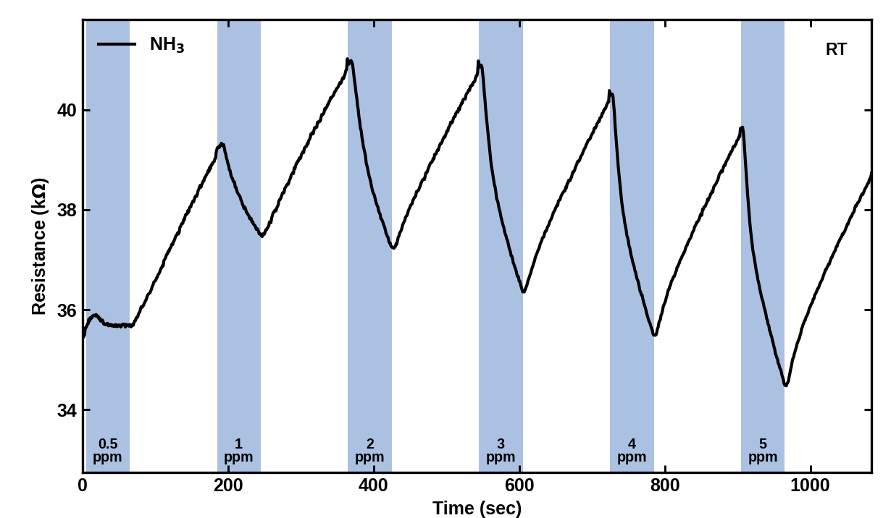
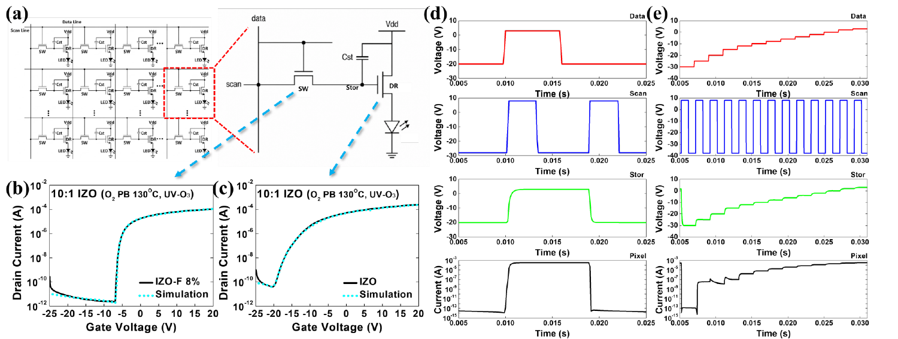
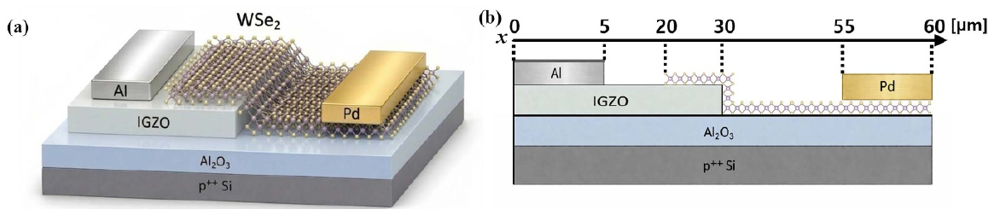
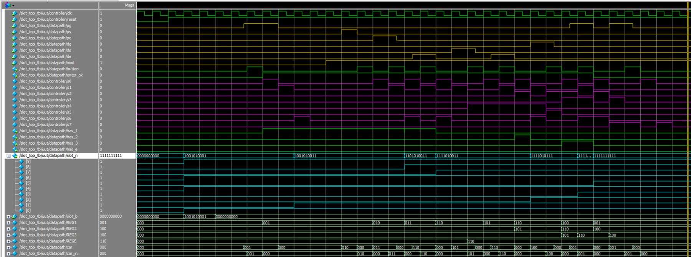

상온 NH3 가스센서 소재 설계 및 감지 특성
캡스톤설계 1·2 · AMDEL 연구실
MBene을 직접 선정해 가열과 UV 없이 상온에서 NH3 1 ppm을 감지하고, 같은 IZO 위 MXene과 반대되는 소재별 선택성을 확인한 연구입니다.
| Period | 2026.01 – 진행 중 |
|---|---|
| Status | In Progress · 논문화 진행 |
| Tools | MFC 가스 측정 시스템 · 습식 식각 합성 · 용액공정 IZO |

용액공정 산화물 TFT 기반 2T1C 디스플레이 화소 소자 설계
참빛설계학기 · 성과발표회 우수상
sol-gel 용액공정 산화물 TFT로 2T1C 디스플레이 화소를 구동하는 것을 목표로, 공정 레시피와 첨가물을 최적화해 TFT 성능을 높이고 TCAD 혼합모드 시뮬레이션으로 화소 구동을 확인한 프로젝트입니다.
| Period | 2026.03 – 2026.06 |
|---|---|
| Status | Complete · 우수상 |
| Tools | 스핀코터 · 핫플레이트 · 노광 · e-beam evaporator · 프로브 스테이션 · TCAD |
3D DRAM1T1C · 2T0C · ALD channel
3D DRAM용 ALD 산화물 반도체 리뷰논문
AMDEL 연구실 · Applied Physics Reviews 투고
셀 구조, 채널 요건, 재료, ALD 공정을 하나의 설계 흐름으로 묶은 66쪽 리뷰를 팀장으로 총괄해 투고한 프로젝트입니다.
| Period | 2026.03 – 2026.10 |
|---|---|
| Status | Under Review |
| Tools | 문헌 162편 분석 · 공동 집필 환경 구축 |

WSe2/IGZO 가우시안 트랜지스터 TCAD 모델링
AMDEL 연구실 · J. Phys. D: Appl. Phys. 게재
연구실 첫 TCAD 도입으로 실측에 보정한 모델을 세워 가우시안 응답의 메커니즘을 해석하고, 구조 변수 7종의 영향을 정량화해 설계 기준을 제시한 연구입니다.
| Period | 2025.01 – 2026.08 |
|---|---|
| Status | Published |
| Tools | Sentaurus TCAD (SDE · SDevice) · AI 피팅 자동화 |

회로 설계 프로젝트
교과 팀 프로젝트 4건 · 2024 – 2025
블루투스 임산부 배려석, Smart Elevator, 자동 주차 배정 시스템, 최단 시간 경로 내비게이션을 논리 IC로 설계해 브레드보드로 구현한 교과 팀 프로젝트 4건입니다.
| Period | 2024.03 – 2025.12 |
|---|---|
| Status | Complete |
| Tools | Verilog · SPICE · 논리 IC · 브레드보드 |